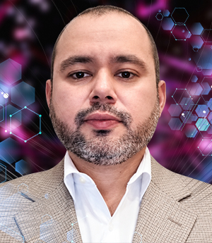

Jesus Alejandro Quiros Alcala
CITEDI-IPN
Multi-Agent Roundabout Circulation and Lane Changing using Soft Actor-Critic Control and a Modified Van der Pol Reference
October 15, 2026 · 14:40 · In-person · Technical presentation
About the Speaker
Jesus Quiros is an Electronics Engineer from the Instituto Tecnológico de Sonora and holds a Master of Science in Aerospace Engineering from CETYS Universidad. He is currently a third-semester Ph.D. student in Digital Systems at the Instituto Politécnico Nacional, CITEDI.
He has more than 16 years of professional experience in product design and development across the electronics, automotive, and medical industries, including work with Sony Electronics, Johnson & Johnson, and Solar Turbines. His research interests include artificial intelligence, nonlinear control, autonomous vehicles, multi-agent systems, and reinforcement learning.